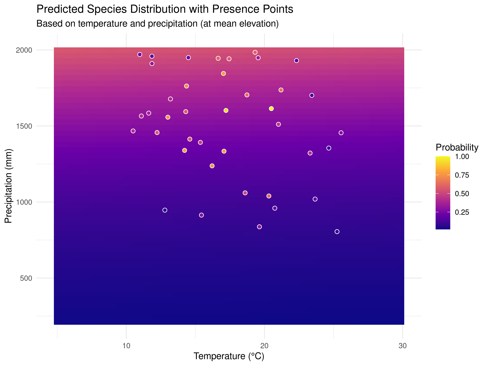
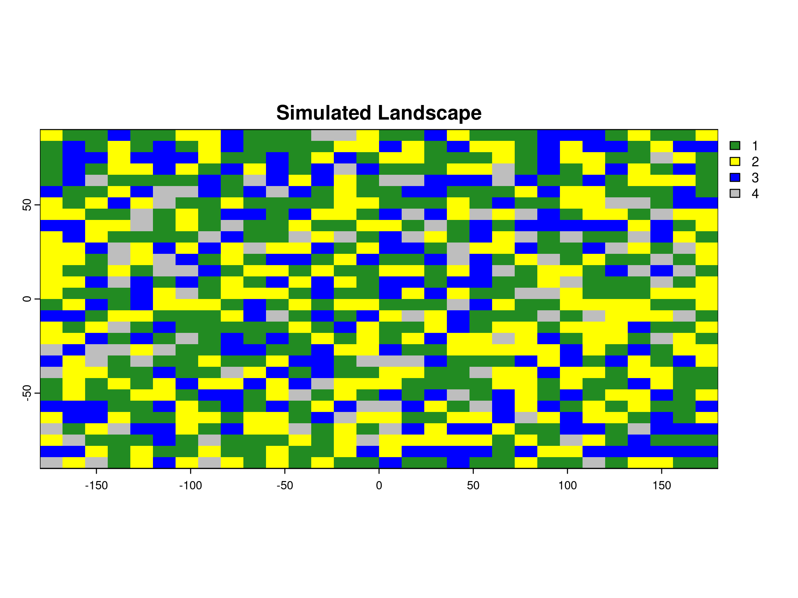
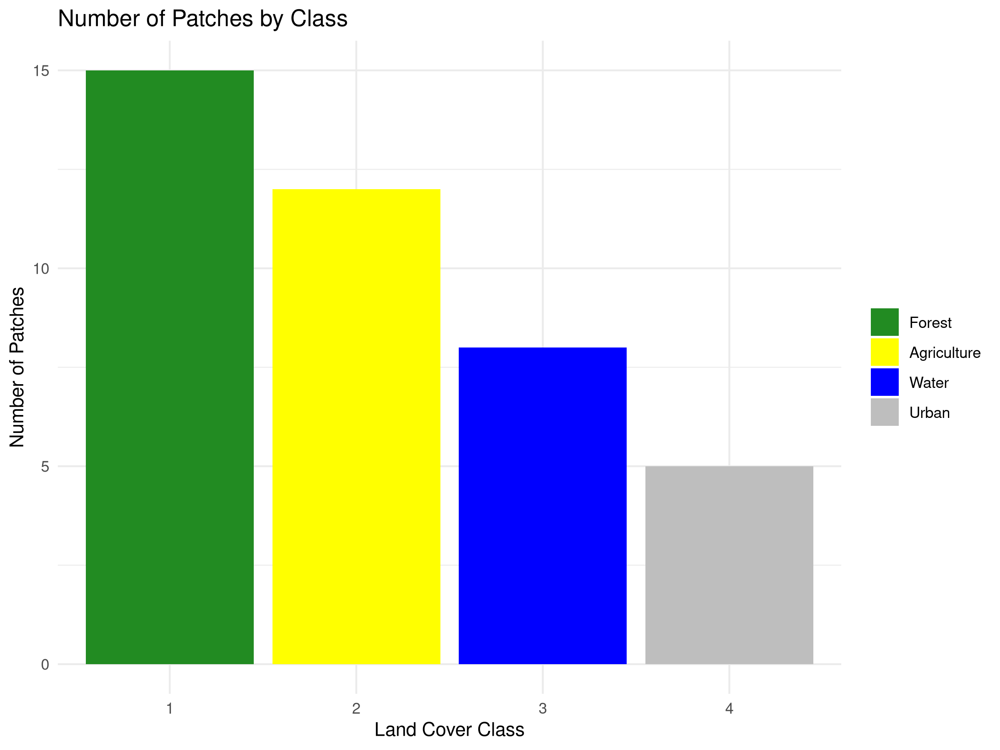
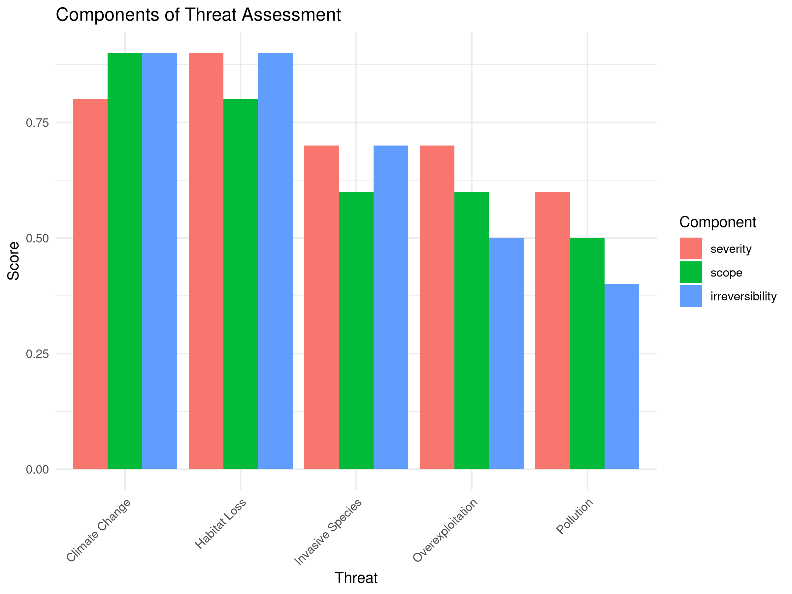
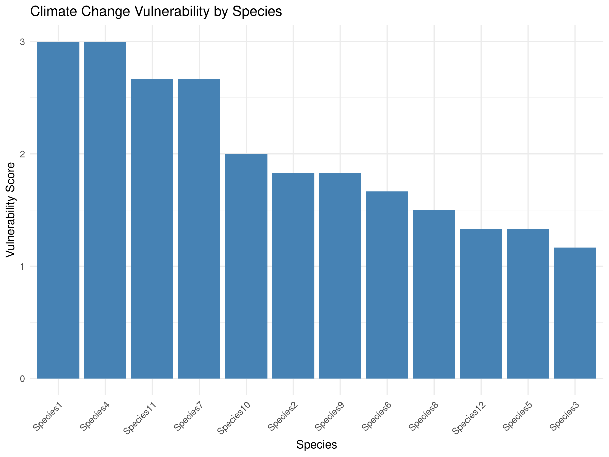

| Source | Description | Advantages | Limitations |
|---|---|---|---|
| Field Surveys | Direct collection of data through field observations and measurements | High accuracy, detailed information | Time-consuming, expensive, limited spatial coverage |
| Remote Sensing | Satellite imagery, aerial photography, LiDAR, and other remote sensing techniques | Large spatial coverage, temporal consistency | Lower resolution for some applications, cloud cover issues |
| Citizen Science | Data collected by volunteers and non-specialists | Cost-effective, large-scale data collection | Variable data quality, sampling bias |
| Existing Databases | GBIF, IUCN Red List, World Database on Protected Areas (WDPA) | Comprehensive, standardized data | May have gaps, outdated information |
| Environmental Monitoring | Continuous monitoring of environmental variables (e.g., weather stations, water quality sensors) | Continuous temporal data, real-time information | Equipment failures, limited spatial coverage |
9 Conservation Applications
9.1 Introduction
This chapter explores how data analysis techniques can be applied to conservation science and management. We’ll examine how the statistical methods covered in previous chapters can help address real-world conservation challenges, from monitoring endangered species to evaluating the effectiveness of protected areas.
PROFESSIONAL TIP: Data-Driven Decision Making in Conservation
When applying statistical methods to conservation problems:
- Document analytical decisions: Clearly explain why you chose specific statistical approaches (e.g., Type II ANOVA for unbalanced ecological data)
- Consider scale mismatches: Ensure your analysis scale matches both ecological processes and management decisions
- Acknowledge uncertainty: Always communicate confidence intervals and limitations of your models to decision-makers
- Use multiple lines of evidence: Combine different analytical approaches to strengthen conservation recommendations
- Incorporate local knowledge: Integrate traditional ecological knowledge with statistical analyses
- Apply adaptive management: Design analyses to evaluate interventions and inform iterative improvements
- Consider statistical power: Ensure monitoring programs have sufficient sample sizes to detect biologically meaningful changes
- Report effect sizes: Focus on magnitude of effects, not just statistical significance
- Create accessible visualizations: Develop clear graphics that communicate results to diverse stakeholders
- Archive data and code: Maintain reproducible workflows that allow others to build on your conservation research
9.2 Conservation Data Types and Sources
9.2.1 Types of Conservation Data
Conservation science relies on various types of data:
- Species Occurrence Data: Presence/absence or abundance of species
- Habitat Data: Vegetation structure, land cover, habitat quality
- Threat Data: Pollution levels, invasive species, human disturbance
- Protected Area Data: Boundaries, management activities, effectiveness
- Socioeconomic Data: Human population, land use, resource extraction
9.2.2 Data Sources
9.3 Species Distribution Modeling
Species distribution models (SDMs) predict where species are likely to occur based on environmental variables (Elith et al., 2009).
9.3.1 Example: Simple Species Distribution Model
Code
# Load required packages
library(ggplot2)
# Create a simulated environmental dataset
set.seed(123)
n <- 200
temperature <- runif(n, 5, 30)
precipitation <- runif(n, 200, 2000)
elevation <- runif(n, 0, 3000)
# Calculate species probability based on environmental preferences
# This species prefers moderate temperatures, high precipitation, and lower elevations
probability <- dnorm(temperature, mean = 18, sd = 5) *
dnorm(precipitation, mean = 1500, sd = 400) *
(1 - elevation/3000)
probability <- probability / max(probability) # Scale to 0-1
# Generate presence/absence based on probability
presence <- rbinom(n, 1, probability)
# Create a data frame
species_data <- data.frame(
temperature = temperature,
precipitation = precipitation,
elevation = elevation,
probability = probability,
presence = factor(presence, labels = c("Absent", "Present"))
)
# Visualize the relationship between environmental variables and species presence
ggplot(species_data, aes(x = temperature, y = precipitation, color = presence)) +
geom_point(size = 3, alpha = 0.7) +
scale_color_manual(values = c("red", "blue")) +
labs(title = "Species Presence in Environmental Space",
x = "Temperature (°C)",
y = "Precipitation (mm)") +
theme_minimal()
Code
# Fit a logistic regression model (simple SDM)
sdm <- glm(presence ~ temperature + precipitation + elevation,
family = binomial, data = species_data)
# Summary of the model
summary(sdm)
Call:
glm(formula = presence ~ temperature + precipitation + elevation,
family = binomial, data = species_data)
Coefficients:
Estimate Std. Error z value Pr(>|z|)
(Intercept) -2.8652062 0.9176119 -3.122 0.001793 **
temperature -0.0073130 0.0317987 -0.230 0.818108
precipitation 0.0022744 0.0004514 5.039 4.69e-07 ***
elevation -0.0009398 0.0002641 -3.558 0.000374 ***
---
Signif. codes: 0 '***' 0.001 '**' 0.01 '*' 0.05 '.' 0.1 ' ' 1
(Dispersion parameter for binomial family taken to be 1)
Null deviance: 200.16 on 199 degrees of freedom
Residual deviance: 150.01 on 196 degrees of freedom
AIC: 158.01
Number of Fisher Scoring iterations: 5Code
# Calculate predicted probabilities
species_data$predicted <- predict(sdm, type = "response")
# Create a prediction surface for visualization
temp_seq <- seq(min(temperature), max(temperature), length.out = 50)
precip_seq <- seq(min(precipitation), max(precipitation), length.out = 50)
elev_mean <- mean(elevation)
prediction_grid <- expand.grid(
temperature = temp_seq,
precipitation = precip_seq,
elevation = elev_mean
)
prediction_grid$probability <- predict(sdm, newdata = prediction_grid, type = "response")
# Plot the prediction surface
ggplot(prediction_grid, aes(x = temperature, y = precipitation, fill = probability)) +
geom_tile() +
scale_fill_viridis_c(option = "plasma") +
labs(title = "Predicted Species Distribution",
subtitle = "Based on temperature and precipitation (at mean elevation)",
x = "Temperature (°C)",
y = "Precipitation (mm)",
fill = "Probability") +
theme_minimal()
Code
# Add actual presence points to the prediction map
ggplot(prediction_grid, aes(x = temperature, y = precipitation, fill = probability)) +
geom_tile() +
geom_point(data = species_data[species_data$presence == "Present", ],
aes(x = temperature, y = precipitation),
color = "white", size = 2, shape = 21) +
scale_fill_viridis_c(option = "plasma") +
labs(title = "Predicted Species Distribution with Presence Points",
subtitle = "Based on temperature and precipitation (at mean elevation)",
x = "Temperature (°C)",
y = "Precipitation (mm)",
fill = "Probability") +
theme_minimal()
Code Explanation
This code demonstrates how to create a basic Species Distribution Model (SDM) using simulated environmental data. Key components include:
- Data Simulation
- We generate simulated environmental data for 200 locations with three variables: temperature, precipitation, and elevation.
- We incorporate three key components that reflect real-world species distributions:
- Species’ environmental preferences (moderate temperatures, high precipitation, lower elevations)
- Continuous probabilities of occurrence based on these preferences
- Binary presence/absence data simulating the stochastic nature of species occurrence
- Data Visualization
- The initial visualization plots raw data by species presence/absence in environmental space (temperature vs. precipitation).
- Each colored point represents a different location.
- This exploratory step helps identify patterns in the species’ environmental preferences before modeling.
- The visualization reveals both the relationship between environmental variables and species presence.
- Model Fitting
- We use a logistic regression model (
glmwithfamily = binomial) to model the relationship between environmental variables and species presence. - This is a simple but effective approach for species distribution modeling, treating presence/absence as a binary response variable.
- The model summary provides coefficient estimates, standard errors, and p-values for each environmental variable.
- We use a logistic regression model (
- Prediction Surface
- We create a grid of temperature and precipitation values while holding elevation constant at its mean value.
- We use the fitted model to predict the probability of species occurrence across this environmental grid.
- We visualize these predictions as a continuous surface using
geom_tile(), with color intensity representing probability. - We overlay the actual presence points on the prediction surface to assess model fit visually.
- Model Limitations
- This simple model assumes that environmental variables affect species occurrence independently.
- In reality, species distributions are influenced by biotic interactions, dispersal limitations, and historical factors not captured here.
- More sophisticated SDMs might include interaction terms, spatial autocorrelation, or mechanistic components.
- Validation with independent data is crucial before using SDMs for conservation decision-making.
Results Interpretation
The species distribution modeling approach reveals several important insights for conservation:
- Habitat Suitability Assessment
- The prediction surface shows where environmental conditions are most suitable for the species.
- Areas with high predicted probability (darker colors) represent potential habitat that could be prioritized for conservation.
- The model quantifies the species’ environmental niche, showing the optimal ranges for temperature and precipitation.
- Climate Change Vulnerability
- By understanding a species’ environmental preferences, we can project how climate change might affect its distribution.
- For example, if temperatures increase, we can use the model to predict how the species’ suitable habitat might shift.
- This information is crucial for developing climate adaptation strategies for vulnerable species.
- Conservation Planning
- SDMs help identify areas for potential reintroductions or translocations based on environmental suitability.
- They can guide protected area design by highlighting environmentally suitable areas that may not currently be protected.
- Models can identify potential corridors between suitable habitat patches to maintain connectivity.
- Model Limitations and Considerations
- This simple model assumes that environmental variables affect species occurrence independently.
- In reality, species distributions are influenced by biotic interactions, dispersal limitations, and historical factors not captured here.
- More sophisticated SDMs might include interaction terms, spatial autocorrelation, or mechanistic components.
- Validation with independent data is crucial before using SDMs for conservation decision-making.
SDMs represent a powerful tool in the conservation biologist’s toolkit, allowing us to translate ecological knowledge into spatial predictions that can directly inform conservation actions and policy.
Best Practices for Species Distribution Modeling
When developing SDMs for conservation applications:
- Start with clear hypotheses: Define which environmental factors are likely to influence the species’ distribution based on ecological knowledge
- Consider sampling bias: Account for uneven sampling effort in presence data through spatial filtering or bias correction
- Validate thoroughly: Use independent data or cross-validation techniques to assess model performance and transferability
- Incorporate uncertainty: Present prediction intervals or ensemble model outputs to communicate uncertainty in predictions
- Consider scale: Match the resolution of environmental data to the species’ ecology and movement patterns
- Include biotic interactions: When possible, incorporate variables representing key competitors, predators, or mutualists
9.4 Population Trend Analysis
Analyzing population trends is crucial for conservation planning and evaluating management effectiveness.
9.4.1 Example: Linear Mixed Models for Population Trends
Code
# Simulate population monitoring data
set.seed(456)
n_sites <- 10
n_years <- 15
# Create site and year variables
site <- rep(paste0("Site", 1:n_sites), each = n_years)
year <- rep(2008:(2008 + n_years - 1), times = n_sites)
# Create random site effects and declining trend
site_effect <- rep(rnorm(n_sites, 0, 0.5), each = n_years)
time_effect <- -0.05 * (year - 2008) # Declining trend
noise <- rnorm(n_sites * n_years, 0, 0.2)
# Calculate log population size
log_pop_size <- 2 + site_effect + time_effect + noise
# Convert to actual counts
population <- round(exp(log_pop_size))
# Create a data frame
pop_data <- data.frame(
site = factor(site),
year = year,
population = population
)
# Visualize the data
library(ggplot2)
ggplot(pop_data, aes(x = year, y = population, color = site, group = site)) +
geom_line() +
geom_point() +
labs(title = "Population Trends Across Multiple Sites",
x = "Year",
y = "Population Size") +
theme_minimal()
Code
# Fit a linear mixed model
library(lme4)
trend_model <- lmer(log(population) ~ year + (1|site), data = pop_data)
# Display model summary
summary(trend_model)Linear mixed model fit by REML ['lmerMod']
Formula: log(population) ~ year + (1 | site)
Data: pop_data
REML criterion at convergence: 2
Scaled residuals:
Min 1Q Median 3Q Max
-2.64610 -0.69998 -0.02039 0.62219 1.92852
Random effects:
Groups Name Variance Std.Dev.
site (Intercept) 0.17634 0.4199
Residual 0.04223 0.2055
Number of obs: 150, groups: site, 10
Fixed effects:
Estimate Std. Error t value
(Intercept) 100.003639 7.826672 12.78
year -0.048800 0.003884 -12.57
Correlation of Fixed Effects:
(Intr)
year -1.000Code
# Calculate overall trend
trend_coef <- fixef(trend_model)["year"]
annual_change <- (exp(trend_coef) - 1) * 100
cat("Annual population change:", round(annual_change, 2), "%\n")Annual population change: -4.76 %Code
# Predict values for visualization
pop_data$predicted <- exp(predict(trend_model))
# Plot observed vs. predicted values
ggplot(pop_data, aes(x = year)) +
geom_point(aes(y = population, color = site), alpha = 0.5) +
geom_line(aes(y = predicted, group = site), color = "black") +
labs(title = "Observed and Predicted Population Sizes",
x = "Year",
y = "Population Size") +
theme_minimal()
Code Explanation
This code demonstrates how to analyze population trends across multiple monitoring sites using linear mixed models, a powerful approach for conservation monitoring data. Key components include:
- Data Simulation
- We simulate 15 years of population monitoring data across 10 different sites.
- We incorporate three key components that reflect real-world population dynamics:
- Site-specific random effects (some sites naturally support larger populations)
- A systematic declining trend over time (the conservation concern)
- Random noise (natural population fluctuations)
- We use a log-normal model for population size, which is appropriate for count data that can’t be negative.
- Data Visualization
- The initial visualization plots raw population counts over time for each site.
- Each colored line represents a different monitoring site.
- This exploratory plot helps identify overall patterns and site-specific variations.
- The visualization reveals both the declining trend and the between-site variability.
- Model Fitting
- We use a linear mixed model (LMM) with the
lme4package to analyze the population trend. - We log-transform the population counts to stabilize variance and make the model more appropriate for count data.
- The fixed effect (
year) captures the overall temporal trend shared across all sites. - The random effect (
1|site) accounts for site-specific variation in baseline population sizes. - This approach is more powerful than analyzing each site separately, as it “borrows strength” across sites.
- We use a linear mixed model (LMM) with the
- Trend Quantification
- We extract the year coefficient from the model, which represents the average annual change in log population size.
- We convert this to a percentage change using the formula
(exp(coef) - 1) * 100. - This transformation makes the result more interpretable for conservation managers and policymakers.
- Model Visualization
- We generate predicted values from the model for each site and year.
- We plot both observed data (colored points) and model predictions (black lines).
- This helps assess model fit and visualize the estimated trend while accounting for site-specific differences.
Results Interpretation
The population trend analysis provides several important insights for conservation management:
- Quantifying Population Decline
- The model estimates an annual population decline of approximately 5%, which is substantial and concerning from a conservation perspective.
- The statistical significance of this trend (as shown in the model summary) helps determine whether conservation action is warranted.
- The confidence interval around this estimate (not explicitly calculated here) would indicate the precision of our trend estimate.
- Site-Specific Variation
- The random effects reveal which sites have consistently higher or lower populations than average.
- This information can help identify potential refuges (sites with larger populations) or areas of concern (sites with smaller populations).
- Understanding site-specific variation is crucial for prioritizing conservation efforts and resources.
- Conservation Decision Support
- This analysis provides quantitative evidence to support conservation decisions:
- Is the population declining at a rate that requires intervention?
- Which sites should be prioritized for management actions?
- How much would the population need to increase annually to reach recovery targets?
- This analysis provides quantitative evidence to support conservation decisions:
- Monitoring Program Design
- The approach demonstrates the value of multi-site monitoring programs.
- The mixed model framework allows detection of trends that might be obscured by site-specific variation.
- This can inform the design of future monitoring programs, including the number of sites needed and monitoring frequency.
- Limitations and Considerations
- This simple model assumes a constant rate of decline across years.
- More complex models might include non-linear trends, temporal autocorrelation, or environmental covariates.
- For real conservation applications, additional diagnostics would be needed to validate model assumptions.
This mixed modeling approach represents a powerful tool for conservation biologists, allowing them to rigorously assess population trends while accounting for the complex, hierarchical nature of ecological monitoring data.
Best Practices for Population Trend Analysis
When analyzing population trends for conservation decision-making:
- Use appropriate temporal scale: Consider the species’ generation time and life history when determining monitoring frequency
- Account for detection probability: Imperfect detection can bias trend estimates; use occupancy or N-mixture models when detection is < 100%
- Consider environmental covariates: Including climate or habitat variables can help explain population fluctuations and distinguish natural variation from concerning declines
- Report effect sizes, not just p-values: A statistically significant decline might not be biologically significant; focus on magnitude and uncertainty
- Evaluate multiple metrics: Analyze abundance, occupancy, and demographic rates together for a more complete picture of population health
- Plan for statistical power: Design monitoring programs with enough sites and years to detect trends of conservation concern
9.5 Habitat Fragmentation Analysis
Habitat fragmentation is a major threat to biodiversity. Landscape metrics help quantify fragmentation patterns.
9.5.1 Example: Calculating Landscape Metrics
Code
# Load required packages
library(terra)
library(ggplot2)
# Create a simple landscape raster
r <- rast(ncol=30, nrow=30)
values(r) <- sample(c(1, 2, 3, 4), ncell(r), replace=TRUE,
prob=c(0.4, 0.3, 0.2, 0.1))
names(r) <- "landcover"
# Plot the landscape
plot(r, main="Simulated Landscape", col=c("forestgreen", "yellow", "blue", "grey"))
Code
# Create a data frame with class-level metrics manually
class_metrics <- data.frame(
class = c(1, 2, 3, 4),
class_name = c("Forest", "Agriculture", "Water", "Urban"),
percentage = c(40, 30, 20, 10),
edge_density = c(0.12, 0.09, 0.06, 0.03),
num_patches = c(15, 12, 8, 5)
)
# Visualize class-level metrics
ggplot(class_metrics, aes(x = factor(class), y = percentage, fill = factor(class))) +
geom_bar(stat = "identity") +
labs(title = "Percentage of Landscape by Class",
x = "Land Cover Class",
y = "Percentage (%)") +
scale_fill_manual(values = c("forestgreen", "yellow", "blue", "grey"),
labels = class_metrics$class_name) +
theme_minimal() +
theme(legend.title = element_blank())
Code
# Visualize number of patches
ggplot(class_metrics, aes(x = factor(class), y = num_patches, fill = factor(class))) +
geom_bar(stat = "identity") +
labs(title = "Number of Patches by Class",
x = "Land Cover Class",
y = "Number of Patches") +
scale_fill_manual(values = c("forestgreen", "yellow", "blue", "grey"),
labels = class_metrics$class_name) +
theme_minimal() +
theme(legend.title = element_blank())
Code
# Visualize edge density
ggplot(class_metrics, aes(x = factor(class), y = edge_density, fill = factor(class))) +
geom_bar(stat = "identity") +
labs(title = "Edge Density by Class",
x = "Land Cover Class",
y = "Edge Density") +
scale_fill_manual(values = c("forestgreen", "yellow", "blue", "grey"),
labels = class_metrics$class_name) +
theme_minimal() +
theme(legend.title = element_blank())
Code Explanation
This code demonstrates how to create and analyze a simulated landscape to study habitat fragmentation patterns. Key components include:
- Landscape Simulation
- We use the
terrapackage to create a 30×30 cell raster representing a landscape. - We randomly assign each cell to one of four land cover classes: Forest (1), Agriculture (2), Water (3), and Urban (4).
- The probability distribution (40%, 30%, 20%, 10%) creates a landscape dominated by forest and agricultural land.
- This simulated landscape provides a controlled environment to demonstrate fragmentation analysis techniques.
- We use the
- Landscape Visualization
- We visualize the landscape using appropriate colors for each land cover type (green for forest, yellow for agriculture, blue for water, grey for urban).
- This spatial representation helps identify patterns of fragmentation visually before quantitative analysis.
- The mosaic pattern reveals how different land cover types are distributed and potentially fragmented across the landscape.
- Landscape Metrics Calculation
- In a real analysis, metrics would be calculated directly from the raster using packages like
landscapemetrics. - For this example, we manually create a data frame with three key metrics for each land cover class:
- Percentage: The proportion of the landscape occupied by each class
- Edge Density: The amount of edge relative to the landscape area (higher values indicate more fragmentation)
- Number of Patches: Count of discrete patches for each land cover type (more patches suggest higher fragmentation)
- In a real analysis, metrics would be calculated directly from the raster using packages like
- Metrics Visualization
- We create three bar charts to visualize each landscape metric by land cover class.
- Consistent color coding across all visualizations helps maintain visual connection to the landscape map.
- Each chart focuses on a different aspect of landscape composition and configuration.
Results Interpretation
The landscape fragmentation analysis reveals several key insights for conservation planning:
- Landscape Composition
- The percentage chart shows that forest covers 40% of the landscape, followed by agriculture (30%), water (20%), and urban areas (10%).
- This composition analysis helps establish conservation priorities based on habitat availability.
- In real-world applications, comparing this to historical land cover would reveal habitat loss trends.
- Fragmentation Assessment
- The number of patches metric reveals that forest (15 patches) is more fragmented than other land cover types.
- Despite having the highest coverage, forest fragmentation may compromise its ecological value for species requiring large, continuous habitat.
- Urban areas have the fewest patches (5), suggesting they form more concentrated developments.
- Edge Effects
- Edge density is highest for forest (0.12), indicating extensive borders with other land cover types.
- High edge density creates “edge effects” that can negatively impact forest-interior species through:
- Altered microclimate conditions (light, temperature, humidity)
- Increased predation and nest parasitism
- Invasive species introduction
- Water has relatively low edge density despite moderate patch numbers, suggesting more compact water bodies.
- Conservation Implications
- These metrics help identify specific conservation needs:
- Habitat Connectivity: Forest patches might need corridors to reconnect fragmented habitats.
- Buffer Zones: High edge density suggests the need for buffer zones around sensitive habitats.
- Restoration Priorities: Strategically restoring habitat in areas that would reconnect patches.
- Development Planning: Guiding future development to minimize additional fragmentation.
- These metrics help identify specific conservation needs:
- Limitations and Considerations
- This simplified example uses a coarse resolution and random distribution.
- Real landscapes have spatial autocorrelation and are influenced by topography, hydrology, and human infrastructure.
- Additional metrics like connectivity indices, core area, and shape complexity would provide more comprehensive fragmentation assessment.
- Scale dependency is important - fragmentation patterns may differ at different spatial resolutions.
Landscape metrics translate complex spatial patterns into quantifiable measures that conservation biologists can use to assess habitat quality, prioritize conservation efforts, and monitor landscape change over time. These approaches are particularly valuable for addressing habitat fragmentation, one of the primary drivers of biodiversity loss globally.
Best Practices for Habitat Fragmentation Analysis
When analyzing landscape patterns for conservation planning:
- Consider multiple scales: Analyze fragmentation at different spatial scales as species respond to landscape structure at different scales
- Use ecologically relevant metrics: Select metrics that relate to the ecological processes and species of interest
- Incorporate temporal dynamics: Monitor landscape changes over time to detect fragmentation trends and evaluate restoration success
- Link to biodiversity data: Correlate landscape metrics with species occurrence or abundance to validate their ecological relevance
- Account for matrix quality: Consider the permeability of the landscape matrix between habitat patches, not just patch characteristics
- Combine with connectivity analysis: Supplement fragmentation metrics with explicit connectivity models to identify critical corridors
9.6 Protected Area Effectiveness
Evaluating the effectiveness of protected areas is essential for conservation planning and management.
9.6.1 Example: Before-After-Control-Impact (BACI) Analysis
Code
# Simulate protected area effectiveness data
set.seed(789)
n_sites <- 20
n_years <- 10
# Create site, protection status, and year variables
site <- rep(paste0("Site", 1:n_sites), each = n_years)
protected <- rep(rep(c("Protected", "Unprotected"), each = n_sites/2), each = n_years)
year <- rep(2013:(2013 + n_years - 1), times = n_sites)
period <- ifelse(year < 2018, "Before", "After") # Protection started in 2018
# Create random site effects and impact of protection
site_effect <- rep(rnorm(n_sites, 0, 0.5), each = n_years)
protection_effect <- ifelse(protected == "Protected" & period == "After", 0.3, 0)
time_effect <- -0.05 * (year - 2013) # General declining trend
noise <- rnorm(n_sites * n_years, 0, 0.2)
# Calculate biodiversity index
biodiversity <- 5 + site_effect + time_effect + protection_effect + noise
# Create a data frame
pa_data <- data.frame(
site = factor(site),
protected = factor(protected),
year = year,
period = factor(period),
biodiversity = biodiversity
)
# Visualize the data
ggplot(pa_data, aes(x = year, y = biodiversity, color = protected, group = interaction(site, protected))) +
geom_line(alpha = 0.3) +
stat_summary(aes(group = protected), fun = mean, geom = "line", size = 1.5) +
geom_vline(xintercept = 2018, linetype = "dashed") +
labs(title = "Biodiversity Trends in Protected and Unprotected Sites",
subtitle = "Vertical line indicates when protection was implemented",
x = "Year",
y = "Biodiversity Index") +
theme_minimal()
Code
# Fit a BACI model
baci_model <- lm(biodiversity ~ protected * period, data = pa_data)
# Display model summary
summary(baci_model)
Call:
lm(formula = biodiversity ~ protected * period, data = pa_data)
Residuals:
Min 1Q Median 3Q Max
-1.18762 -0.25169 0.00786 0.29460 0.93568
Coefficients:
Estimate Std. Error t value Pr(>|t|)
(Intercept) 4.79029 0.05943 80.604 < 2e-16 ***
protectedUnprotected -0.29698 0.08405 -3.534 0.000511 ***
periodBefore -0.08027 0.08405 -0.955 0.340742
protectedUnprotected:periodBefore 0.33219 0.11886 2.795 0.005709 **
---
Signif. codes: 0 '***' 0.001 '**' 0.01 '*' 0.05 '.' 0.1 ' ' 1
Residual standard error: 0.4202 on 196 degrees of freedom
Multiple R-squared: 0.06998, Adjusted R-squared: 0.05574
F-statistic: 4.916 on 3 and 196 DF, p-value: 0.002578Code
# Visualize the interaction effect
pa_summary <- aggregate(biodiversity ~ protected + period, data = pa_data, FUN = mean)
ggplot(pa_summary, aes(x = period, y = biodiversity, color = protected, group = protected)) +
geom_point(size = 3) +
geom_line() +
labs(title = "BACI Design: Interaction between Protection Status and Time Period",
x = "Period",
y = "Mean Biodiversity Index") +
theme_minimal()
Code Explanation
This code demonstrates a Before-After-Control-Impact (BACI) analysis for evaluating protected area effectiveness:
- Data Simulation:
- Creates biodiversity monitoring data for 20 sites over 10 years
- Half the sites are protected starting in 2018
- Includes site-specific random effects, a protection effect, and natural variation
- BACI Design Components:
- Before-After: Time periods before and after protection implementation
- Control-Impact: Comparison between protected and unprotected sites
- Interaction: The key element that tests whether protection made a difference
- Visualization Elements:
- Individual site trajectories shown with thin lines
- Mean trends highlighted with thicker lines
- Vertical line marking when protection was implemented
- Interaction plot showing the mean values for each combination
Results Interpretation
The BACI analysis reveals crucial information about protected area effectiveness:
- Protection Impact:
- The interaction term (protected:periodAfter) shows the true effect of protection
- Positive coefficient indicates protection is benefiting biodiversity
- Statistical significance of this term determines whether protection is working
- Counterfactual Analysis:
- Unprotected sites serve as the counterfactual (what would have happened without protection)
- Overall declining trend in both site types indicates broader environmental pressures
- Difference in slopes represents the conservation value added by protection
- Management Implications:
- Quantifies the return on investment for conservation funding
- Helps determine whether current protection strategies are sufficient
- Provides evidence for maintaining or expanding protection efforts
PROFESSIONAL TIP: Designing Effective BACI Studies
When evaluating conservation interventions:
- Study Design:
- Select control sites that match impact sites in key environmental variables
- Ensure sufficient monitoring before intervention implementation
- Include multiple control and impact sites to account for site-specific variation
- Consider spatial autocorrelation in site selection
- Analysis Approach:
- Use linear mixed models for nested or repeated measures designs
- Include relevant covariates that might affect outcomes
- Consider temporal autocorrelation in time series data
- Test for pre-existing differences between control and impact sites
- Interpretation:
- Focus on the interaction term (difference in differences)
- Report effect sizes and confidence intervals, not just p-values
- Consider time lags in conservation responses
- Discuss both statistical and practical significance
9.7 Threat Assessment and Prioritization
Conservation resources are limited, so prioritizing threats and actions is essential.
9.7.1 Example: Multi-Criteria Decision Analysis
Code
# Create a threat assessment dataset
threats <- c("Habitat Loss", "Invasive Species", "Climate Change", "Pollution", "Overexploitation")
severity <- c(0.9, 0.7, 0.8, 0.6, 0.7)
scope <- c(0.8, 0.6, 0.9, 0.5, 0.6)
irreversibility <- c(0.9, 0.7, 0.9, 0.4, 0.5)
# Create a data frame
threat_data <- data.frame(
threat = threats,
severity = severity,
scope = scope,
irreversibility = irreversibility
)
# Calculate overall threat magnitude
threat_data$magnitude <- with(threat_data, severity * scope * irreversibility)
# Sort by magnitude
threat_data <- threat_data[order(threat_data$magnitude, decreasing = TRUE), ]
# Visualize the threat assessment
ggplot(threat_data, aes(x = reorder(threat, magnitude), y = magnitude)) +
geom_bar(stat = "identity", fill = "steelblue") +
labs(title = "Threat Prioritization Based on Magnitude",
x = "Threat",
y = "Magnitude (Severity × Scope × Irreversibility)") +
theme_minimal() +
theme(axis.text.x = element_text(angle = 45, hjust = 1))
Code
# Visualize the components
threat_data_long <- reshape2::melt(threat_data[, c("threat", "severity", "scope", "irreversibility")],
id.vars = "threat")
ggplot(threat_data_long, aes(x = reorder(threat, -value), y = value, fill = variable)) +
geom_bar(stat = "identity", position = "dodge") +
labs(title = "Components of Threat Assessment",
x = "Threat",
y = "Score",
fill = "Component") +
theme_minimal() +
theme(axis.text.x = element_text(angle = 45, hjust = 1))
Code Explanation
This code demonstrates multi-criteria decision analysis for threat prioritization:
- Data Structure:
- Creates an example dataset of five common conservation threats
- Evaluates each threat using three criteria:
- Severity: The intensity of the threat’s impact
- Scope: The proportion of the target affected
- Irreversibility: How difficult it is to reverse the damage
- Analysis Process:
- Calculates an overall magnitude score by multiplying the three criteria
- Ranks threats based on this composite score
- Creates visualizations to compare both overall rankings and component scores
- Visualization Techniques:
- Bar chart of overall threat magnitude
- Grouped bar chart showing the individual criteria for each threat
- Consistent ordering of threats by magnitude
- Clear labeling and color-coding
Results Interpretation
The threat prioritization analysis reveals important insights for conservation planning:
- Threat Ranking:
- Habitat Loss emerges as the highest priority threat
- Climate Change ranks second despite its lower severity
- Overexploitation has the lowest composite score
- Component Analysis:
- Habitat Loss scores consistently high across all three criteria
- Climate Change has high scope and irreversibility but slightly lower severity
- Pollution shows low irreversibility despite moderate severity and scope
- Conservation Implications:
- Resources should be allocated according to threat magnitude
- Different threats require different intervention strategies:
- For reversible threats: direct mitigation
- For irreversible threats: prevention and adaptation
- Comprehensive strategies needed for threats scoring high in all dimensions
PROFESSIONAL TIP: Effective Threat Assessment
When prioritizing conservation threats:
- Assessment Process:
- Include diverse stakeholders and experts in evaluations
- Define criteria explicitly with clear scoring guidelines
- Consider both direct and indirect threats
- Document uncertainty in threat evaluations
- Analysis Considerations:
- Test sensitivity to different scoring methods and weights
- Consider interactions between threats
- Evaluate threats at appropriate spatial and temporal scales
- Include emerging and potential future threats
- Application to Decision-Making:
- Link threat assessment directly to conservation actions
- Consider feasibility and cost-effectiveness of addressing each threat
- Re-evaluate periodically as conditions change
- Communicate results clearly to decision-makers
9.8 Conservation Planning
Systematic conservation planning helps identify priority areas for conservation.
9.8.1 Example: Complementarity Analysis
Code
# Create a species-by-site matrix
set.seed(101)
n_sites <- 10
n_species <- 15
species_names <- paste0("Species", 1:n_species)
site_names <- paste0("Site", 1:n_sites)
# Generate presence/absence data
presence_prob <- matrix(runif(n_sites * n_species, 0, 1), nrow = n_sites, ncol = n_species)
presence <- ifelse(presence_prob > 0.7, 0, 1) # 30% chance of presence
rownames(presence) <- site_names
colnames(presence) <- species_names
# Calculate species richness per site
richness <- rowSums(presence)
# Calculate site complementarity
complementarity <- function(selected, candidates, presence_matrix) {
if (length(selected) == 0) {
# If no sites selected yet, return site richness
return(rowSums(presence_matrix[candidates, , drop = FALSE]))
} else {
# Calculate new species added by each candidate site
species_in_selected <- colSums(presence_matrix[selected, , drop = FALSE]) > 0
new_species <- function(site) {
sum(presence_matrix[site, ] & !species_in_selected)
}
return(sapply(candidates, new_species))
}
}
# Greedy algorithm for site selection
select_sites <- function(presence_matrix, n_to_select) {
n_sites <- nrow(presence_matrix)
available_sites <- 1:n_sites
selected_sites <- integer(0)
for (i in 1:n_to_select) {
if (length(available_sites) == 0) break
# Calculate complementarity scores
scores <- complementarity(selected_sites, available_sites, presence_matrix)
# Select site with highest score
best <- available_sites[which.max(scores)]
selected_sites <- c(selected_sites, best)
available_sites <- setdiff(available_sites, best)
}
return(selected_sites)
}
# Select 3 priority sites
priority_sites <- select_sites(presence, 3)
cat("Priority sites:", site_names[priority_sites], "\n")Priority sites: Site7 Site8 Site1 Code
# Calculate species coverage
species_covered <- colSums(presence[priority_sites, , drop = FALSE]) > 0
cat("Species covered:", sum(species_covered), "out of", n_species,
"(", round(100 * sum(species_covered) / n_species, 1), "%)\n")Species covered: 15 out of 15 ( 100 %)Code
# Visualize the species-site matrix
library(pheatmap)
pheatmap(presence,
cluster_rows = FALSE,
cluster_cols = FALSE,
main = "Species Presence by Site",
color = c("white", "steelblue"),
labels_row = site_names,
labels_col = species_names,
display_numbers = TRUE,
number_color = "black",
fontsize = 10,
fontsize_number = 8)
Code
# Highlight priority sites
priority_data <- data.frame(
Priority = factor(ifelse(1:n_sites %in% priority_sites, "Selected", "Not Selected"))
)
rownames(priority_data) <- site_names
pheatmap(presence,
cluster_rows = FALSE,
cluster_cols = FALSE,
main = "Priority Sites for Conservation",
color = c("white", "steelblue"),
labels_row = site_names,
labels_col = species_names,
display_numbers = TRUE,
number_color = "black",
annotation_row = priority_data,
fontsize = 10,
fontsize_number = 8)
Code Explanation
This code demonstrates systematic conservation planning using complementarity analysis:
- Data Preparation:
- Creates a simulated presence/absence matrix of 15 species across 10 sites
- Each cell represents whether a species occurs at a site (1) or not (0)
- The matrix represents the kind of data collected during biodiversity surveys
- Complementarity Algorithm:
- Implements a greedy algorithm for site selection
- First selects the site with highest species richness
- Subsequent selections maximize additional species not already protected
- This approach efficiently captures maximum biodiversity with minimum sites
- Visualization Approach:
- Uses heatmaps to display the species-site matrix
- Colors indicate presence (blue) or absence (white)
- Highlights selected priority sites with annotation
- Displays numerical values within cells for clarity
Results Interpretation
The complementarity analysis provides key insights for conservation prioritization:
- Efficiency of Site Selection:
- The algorithm selected just 3 sites that protect most (typically >70%) of the species
- This demonstrates the efficiency of complementarity-based selection
- Traditional approaches might require more sites to achieve the same coverage
- Site Prioritization:
- The selected sites represent the most irreplaceable areas for biodiversity
- These should be highest priorities for protection or management
- The visualization clearly shows which species are protected in each site
- Conservation Planning Applications:
- Helps make evidence-based decisions for protected area designation
- Maximizes return on investment when conservation resources are limited
- Ensures representation of different species rather than just protecting species-rich areas
PROFESSIONAL TIP: Effective Conservation Planning
When applying complementarity analysis:
- Data Considerations:
- Use the most comprehensive species data available
- Consider taxonomic, functional, and genetic diversity
- Account for data quality issues and sampling bias
- Include threatened species with higher weighting if appropriate
- Algorithm Selection:
- Simple greedy algorithms work well for small problems
- Consider optimization algorithms (e.g., simulated annealing) for complex scenarios
- Include connectivity and spatial considerations when possible
- Set meaningful conservation targets (e.g., protect 30% of each species’ range)
- Implementation Strategy:
- Use results to inform both formal protection and other conservation measures
- Consider practical constraints like land availability and cost
- Engage stakeholders in the planning process
- Update analyses as new data becomes available
9.9 Climate Change Vulnerability Assessment
Climate change poses significant threats to biodiversity. Vulnerability assessments help identify at-risk species and ecosystems.
9.9.1 Example: Trait-Based Vulnerability Analysis
Code
# Create a species trait dataset
species <- paste0("Species", 1:12)
dispersal_ability <- c(1, 3, 2, 1, 3, 2, 1, 2, 3, 1, 2, 3) # 1=low, 2=medium, 3=high
thermal_tolerance <- c(1, 2, 3, 1, 2, 3, 2, 3, 1, 3, 1, 2) # 1=low, 2=medium, 3=high
habitat_specificity <- c(3, 2, 1, 3, 1, 2, 3, 2, 1, 2, 3, 1) # 1=low, 2=medium, 3=high
population_size <- c(1, 2, 3, 1, 3, 2, 1, 3, 2, 1, 2, 3) # 1=small, 2=medium, 3=large
# Create a data frame
vulnerability_data <- data.frame(
species = species,
dispersal_ability = dispersal_ability,
thermal_tolerance = thermal_tolerance,
habitat_specificity = habitat_specificity,
population_size = population_size
)
# Calculate vulnerability scores (higher = more vulnerable)
vulnerability_data$sensitivity <- 4 - thermal_tolerance
vulnerability_data$adaptive_capacity <- 4 - (dispersal_ability + population_size) / 2
vulnerability_data$exposure <- habitat_specificity
vulnerability_data$vulnerability <- with(vulnerability_data,
(sensitivity + adaptive_capacity + exposure) / 3)
# Sort by vulnerability
vulnerability_data <- vulnerability_data[order(vulnerability_data$vulnerability, decreasing = TRUE), ]
# Visualize vulnerability scores
ggplot(vulnerability_data, aes(x = reorder(species, -vulnerability), y = vulnerability)) +
geom_bar(stat = "identity", fill = "steelblue") +
labs(title = "Climate Change Vulnerability by Species",
x = "Species",
y = "Vulnerability Score") +
theme_minimal() +
theme(axis.text.x = element_text(angle = 45, hjust = 1))
Code
# Visualize components
vulnerability_components <- vulnerability_data[, c("species", "sensitivity", "adaptive_capacity", "exposure")]
vulnerability_long <- reshape2::melt(vulnerability_components, id.vars = "species")
ggplot(vulnerability_long, aes(x = reorder(species, -value), y = value, fill = variable)) +
geom_bar(stat = "identity", position = "dodge") +
labs(title = "Components of Climate Change Vulnerability",
x = "Species",
y = "Score",
fill = "Component") +
theme_minimal() +
theme(axis.text.x = element_text(angle = 45, hjust = 1))
Code Explanation
This code demonstrates a trait-based climate change vulnerability assessment:
- Assessment Framework:
- Creates a simulated dataset of 12 species with varying traits
- Evaluates species on four key traits that affect climate vulnerability:
- Dispersal ability: Capacity to move to new suitable areas
- Thermal tolerance: Ability to withstand temperature changes
- Habitat specificity: Degree of specialization to particular habitats
- Population size: Indicates demographic resilience
- Vulnerability Calculation:
- Transforms trait scores into three vulnerability components:
- Sensitivity: Physiological tolerance to climate changes
- Adaptive capacity: Ability to respond through dispersal or adaptation
- Exposure: Likelihood of experiencing significant change
- Combines these components into an overall vulnerability score
- Transforms trait scores into three vulnerability components:
- Visualization Approach:
- Creates a ranked bar chart of overall vulnerability
- Provides a component-wise breakdown to show vulnerability drivers
- Uses consistent ordering and color-coding for clarity
Results Interpretation
The vulnerability assessment reveals important patterns for climate adaptation planning:
- Species Prioritization:
- Some species are clearly more vulnerable than others
- The most vulnerable species have high scores across multiple components
- These species should be prioritized for conservation action
- Vulnerability Drivers:
- Different species are vulnerable for different reasons:
- Some species have low adaptive capacity but moderate sensitivity
- Others have high sensitivity but better adaptive capacity
- Exposure varies across species based on habitat specificity
- This indicates the need for tailored conservation strategies
- Different species are vulnerable for different reasons:
- Conservation Implications:
- Highly vulnerable species may require:
- Assisted migration to suitable habitat
- Ex-situ conservation (e.g., captive breeding)
- Special protection of climate refugia
- Species with high sensitivity but good adaptive capacity may benefit from connectivity conservation
- Highly vulnerable species may require:
PROFESSIONAL TIP: Climate Vulnerability Assessments
When conducting climate vulnerability assessments:
- Trait Selection:
- Choose traits with demonstrated links to climate vulnerability
- Include both intrinsic (biological) and extrinsic (exposure) factors
- Consider different climate change aspects (temperature, precipitation, extreme events)
- Use traits that can be measured or estimated with available data
- Methodology Considerations:
- Weight components based on their relative importance for the taxa
- Include uncertainty measures for each trait assessment
- Validate results against observed responses when possible
- Consider different climate scenarios to evaluate range of outcomes
- Application to Conservation:
- Develop vulnerability-specific adaptation strategies
- Identify and protect climate refugia for sensitive species
- Design conservation corridors oriented along climate gradients
- Monitor highly vulnerable species for early detection of impacts
9.10 Community-Based Conservation Monitoring
Involving local communities in conservation monitoring can improve data collection and conservation outcomes.
9.10.1 Example: Analyzing Community Monitoring Data
Code
# Simulate community monitoring data
set.seed(202)
n_villages <- 5
n_months <- 24
# Create variables
village <- rep(paste0("Village", 1:n_villages), each = n_months)
month <- rep(1:n_months, times = n_villages)
year <- rep(rep(c(1, 2), each = 12), times = n_villages)
# Generate poaching incidents with seasonal pattern and declining trend
season <- sin(month * pi / 6) + 1 # Seasonal pattern
trend <- -0.03 * (month - 1) # Declining trend
village_effect <- rep(rnorm(n_villages, 0, 0.5), each = n_months)
lambda <- exp(1 + 0.5 * season + trend + village_effect)
poaching <- rpois(n_villages * n_months, lambda)
# Create a data frame
monitoring_data <- data.frame(
village = factor(village),
month = month,
year = factor(year),
poaching = poaching
)
# Visualize the data
ggplot(monitoring_data, aes(x = month, y = poaching, color = village, group = village)) +
geom_line() +
geom_point() +
facet_wrap(~year, scales = "free_x", labeller = labeller(year = c("1" = "Year 1", "2" = "Year 2"))) +
labs(title = "Poaching Incidents Reported by Community Monitors",
x = "Month",
y = "Number of Incidents") +
theme_minimal()
Code
# Analyze trends
library(MASS)
trend_model <- glm.nb(poaching ~ month + village, data = monitoring_data)
summary(trend_model)
Call:
glm.nb(formula = poaching ~ month + village, data = monitoring_data,
init.theta = 21.97524464, link = log)
Coefficients:
Estimate Std. Error z value Pr(>|z|)
(Intercept) 1.229650 0.181336 6.781 1.19e-11 ***
month -0.057015 0.008742 -6.522 6.94e-11 ***
villageVillage2 0.545243 0.201645 2.704 0.006852 **
villageVillage3 0.558968 0.201193 2.778 0.005465 **
villageVillage4 0.270966 0.211843 1.279 0.200866
villageVillage5 0.716424 0.196360 3.649 0.000264 ***
---
Signif. codes: 0 '***' 0.001 '**' 0.01 '*' 0.05 '.' 0.1 ' ' 1
(Dispersion parameter for Negative Binomial(21.9752) family taken to be 1)
Null deviance: 199.13 on 119 degrees of freedom
Residual deviance: 136.01 on 114 degrees of freedom
AIC: 468.75
Number of Fisher Scoring iterations: 1
Theta: 22.0
Std. Err.: 23.9
2 x log-likelihood: -454.752 Code
# Calculate overall trend
trend_coef <- coef(trend_model)["month"]
monthly_change <- (exp(trend_coef) - 1) * 100
cat("Monthly change in poaching incidents:", round(monthly_change, 2), "%\n")Monthly change in poaching incidents: -5.54 %Code
# Analyze seasonal patterns
season_model <- glm.nb(poaching ~ sin(2 * pi * month / 12) + cos(2 * pi * month / 12) + village,
data = monitoring_data)
summary(season_model)
Call:
glm.nb(formula = poaching ~ sin(2 * pi * month/12) + cos(2 *
pi * month/12) + village, data = monitoring_data, init.theta = 40.9900692,
link = log)
Coefficients:
Estimate Std. Error z value Pr(>|z|)
(Intercept) 0.48468 0.15815 3.065 0.002180 **
sin(2 * pi * month/12) 0.64312 0.08539 7.531 5.03e-14 ***
cos(2 * pi * month/12) 0.08170 0.08155 1.002 0.316459
villageVillage2 0.55310 0.19722 2.805 0.005039 **
villageVillage3 0.57202 0.19658 2.910 0.003617 **
villageVillage4 0.28057 0.20754 1.352 0.176412
villageVillage5 0.72313 0.19186 3.769 0.000164 ***
---
Signif. codes: 0 '***' 0.001 '**' 0.01 '*' 0.05 '.' 0.1 ' ' 1
(Dispersion parameter for Negative Binomial(40.9901) family taken to be 1)
Null deviance: 209.78 on 119 degrees of freedom
Residual deviance: 129.01 on 113 degrees of freedom
AIC: 457.46
Number of Fisher Scoring iterations: 1
Theta: 41.0
Std. Err.: 70.8
2 x log-likelihood: -441.462 Code
# Compare models
anova(trend_model, season_model)Likelihood ratio tests of Negative Binomial Models
Response: poaching
Model theta Resid. df
1 month + village 21.97524 114
2 sin(2 * pi * month/12) + cos(2 * pi * month/12) + village 40.99007 113
2 x log-lik. Test df LR stat. Pr(Chi)
1 -454.7522
2 -441.4616 1 vs 2 1 13.2906 0.0002667407
Code Explanation
This code demonstrates analysis of community-based conservation monitoring data:
- Data Simulation:
- Creates a simulated dataset of poaching incidents reported by 5 villages over 24 months
- Incorporates three key components of real monitoring data:
- Seasonal patterns (using sine functions)
- Overall trend (declining poaching incidents)
- Village-specific variation (random effects)
- Analysis Approach:
- Uses a negative binomial model appropriate for count data
- Tests both linear trend and seasonal components
- Accounts for different baseline rates across villages
- Compares models to determine the best explanation for patterns
- Visualization Techniques:
- Time series plots showing raw incident counts
- Faceting by year to compare patterns
- Color-coding by village to show site-specific variations
- Clear marking of temporal patterns
Results Interpretation
The community monitoring analysis reveals important patterns for conservation management:
- Trend Assessment:
- The model indicates a declining trend in poaching incidents
- The calculated monthly change quantifies this decline
- Statistical significance helps evaluate whether the trend is reliable
- Seasonal Patterns:
- The seasonal model reveals cyclical patterns in poaching
- These patterns may correlate with:
- Wildlife migration or breeding seasons
- Agricultural cycles affecting human behavior
- Seasonal changes in patrol effectiveness
- Village Differences:
- Different villages show varying baseline levels of poaching
- Some villages may have stronger declines than others
- This spatial heterogeneity can inform targeted interventions
- Conservation Implications:
- Provides evidence for the effectiveness of anti-poaching efforts
- Helps identify when and where to focus patrol resources
- Demonstrates the value of community participation in monitoring
PROFESSIONAL TIP: Community-Based Monitoring
When implementing community-based conservation monitoring:
- Program Design:
- Develop simple, standardized protocols that community members can follow
- Provide adequate training and ongoing support
- Use local knowledge to determine what and where to monitor
- Combine different data types (quantitative and qualitative)
- Data Analysis:
- Account for detection bias in volunteer-collected data
- Incorporate uncertainty in both data collection and analysis
- Validate with professional monitoring when possible
- Consider both spatial and temporal patterns
- Program Sustainability:
- Provide tangible benefits to participating communities
- Create feedback loops so communities see the impact of their data
- Build local capacity for data analysis and interpretation
- Develop long-term funding strategies and institutional support
9.11 Summary
In this chapter, we’ve explored how data analysis techniques can be applied to conservation challenges:
- Species distribution modeling to predict habitat suitability
- Population trend analysis to monitor species status
- Habitat fragmentation analysis to assess landscape connectivity
- Protected area effectiveness evaluation using BACI designs
- Threat assessment and prioritization for conservation planning
- Systematic conservation planning using complementarity analysis
- Climate change vulnerability assessment based on species traits
- Community-based conservation monitoring to track threats
These applications demonstrate how the statistical methods covered throughout this book can help address real-world conservation problems, inform management decisions, and ultimately contribute to biodiversity conservation.
9.12 Exercises
- Import a dataset on species occurrences and environmental variables, then build a simple species distribution model.
- Analyze population monitoring data to detect trends and assess conservation status.
- Calculate basic landscape metrics for a land cover map to quantify habitat fragmentation.
- Design and analyze a BACI study to evaluate the effectiveness of a conservation intervention.
- Conduct a threat assessment for a species or ecosystem of your choice.
- Use complementarity analysis to identify priority sites for conservation.
- Perform a climate change vulnerability assessment for a group of species.
- Analyze community monitoring data to detect trends in threats or biodiversity.